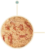
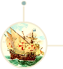
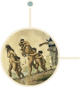
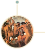
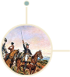
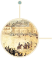
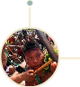

Voltar para Home

O brasil pré-histórico

O brasil pré-colonial

O brasil colonial

O brasil na crise do colonial

brasil império

brasil na primeira república
Brasil república no estado novo de vargas
Brasil república na ditadura civil-militar-religiosa

Brasil república e sua democratização
Brasil república na história do tempo presente